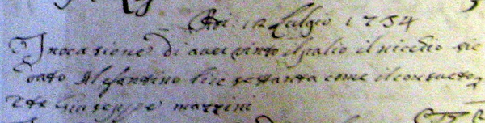
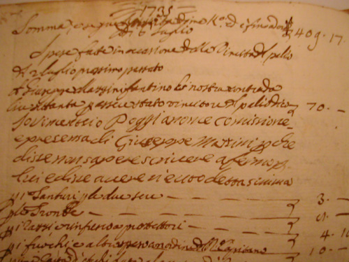

|
Nato a Siena, l'8 maggio 1718 (vedi battesimo) 

Il resoconto della Contrada del Nicchio che il 12 luglio 1734 stabilisce come il consueto di dare lire 70 a Giuseppe Mazzini
per la vincita del Palio  Nobile Contrada del Nicchio, culto 1 c.117  Archivio Contrada della Tartuca
Resoconto delle spese sostenute dalla Contrada della Tartuca per il Palio vinto nel 1735. La prima voce indica che al fantino Giuseppe Mazzini, vennero elargite 70 lire. 
Nella maggioranza dei libri, il vincitore dei Palii del 2 luglio 1734 e 1735 viene indicato
con il nome di Antonio, anziché Giuseppe. La spiegazione di tale discordanza si trova fra le righe del suo battesimo dove compare con il nome di Giuseppe Antonio.  |